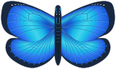

Recortar y plegar
Cola de golondrina
Busca las dos colas largas detrás de las alas amarillas. Las aletas de cola ajustables están más cerca del cuerpo. Las colas largas forman parte del contorno. Dobla una de las aletas más pequeñas junto al cuerpo y las dos alas presentarán formas distintas al aire. Anota por separado hacia dónde se inclina al principio y dónde aterriza.
Abrir el taller
Qué necesitas
Plantilla impresa, tijeras, regla y un clip pequeño de punta redondeada
Imprime la plantilla (K1)
Imprime al 100 % (Tamaño real) y comprueba con una regla que la escala del papel mide 50 mm.
Prueba este experimento
Empieza con las dos aletas de cola a ras. En la segunda serie sube un poco una sola. ¿En qué lado se concentran las primeras tomas de contacto?
Otros pliegues de mariposa
Alas con aletas (W1)
Borde de ataque plegado (K2)
K2 experimental. Usa papel de 120 g/m² y dos clips de 33 mm. Falta comparar sus vuelos con los del K1.
Ver los otros modelos
-

Monarca
Recortar y plegar
-

Morfo azul
Recortar y plegar